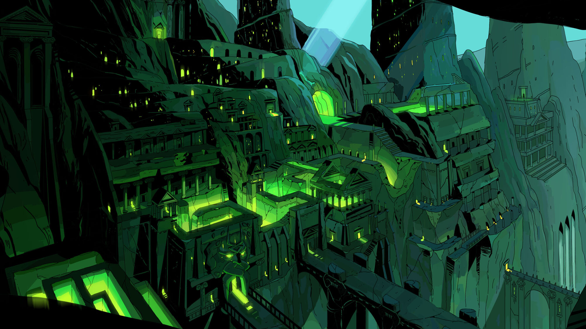
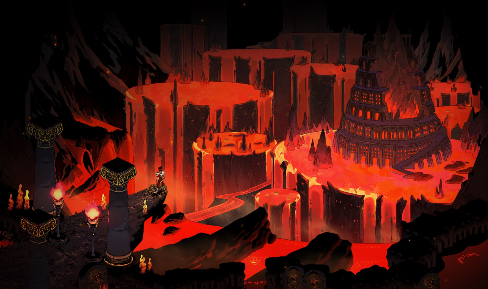
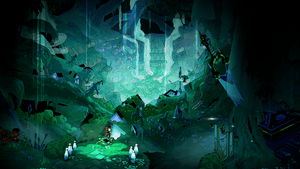

Biomes
To beat the game you must make it through each biome in hades in on run. Each level has different enviroment that can be used against you and/or the enemies.
Tartarus
Tartarus is the first level you enter after leaving the weapon room.
Asphodel
This is the second level of Hades. You enter this area after defeating one of the three fates (or all of them...) in Tartarus.
Elysiuim
This is the third level of Hades. To enter this area you have to defeat the Hydra in Asphodel.
The bosses to defeat for each area:
- The Three Furies (might have to defeat one or three at once)
- Hydra (has different forms)
- Theseus and Asterius
To learn more about the different areas visit: https://guides.gamepressure.com/hades/guide.asp?ID=60340